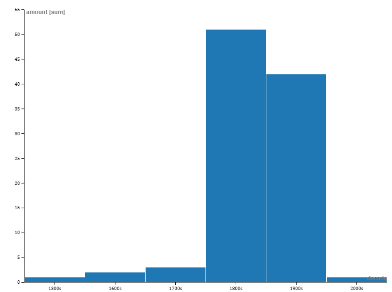
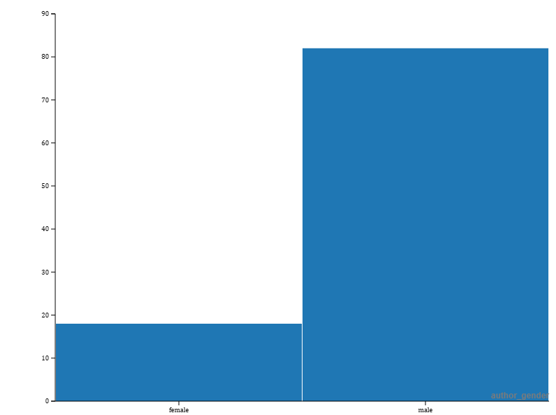

The Gender Dispersion across Great Books
The data set analyzed in this project is the “Top 500 ‘Greatest Novels’ (1021-2015)” from OCLC (formerly known as the Online Computer Library Center), which is a “global library organization that provides shared technology services, original research, and community programs for its membership and the library community at large.” The data set contains information about the book itself (author, language, publishing year) as well as OCLC information (OCLC holdings, eholdings, and edition holdings), and finally information about the Goodreads listing of the book. For this project, I pared down the 500 books to 100 books and removed several unrelated categories such as each book’s wikipedia url and the author’s field of interest. Additionally, I did separate research on the 100 remaining books as to whether they had ever been banned in the US. The goal of this research was to determine if there was any correlation between mundane book attributes and their banned status. The books in this data set range from 1351-2003 with a disproportional representation of the 19 and 20th centuries. Of the 100 books, 18 were penned by female authors, and 82 by male authors. The total holdings of the OCLC for the aforementioned female written books is 406619, whereas the male written books number 1426011, more than 100,000 more. 31 out of 100 books had been banned (31%) while 69 of 100 had never been banned (69%). Proportionately, 18% of the unbanned books had female authors and 82% had male authors. However, of the 29 banned books, only 12% were written by women, Wuthering Heights, My Antonia, To Kill a Mockingbird, and Harry Potter whereas 94% of the banned books were written by men. This data shows that women are incredibly underrepresented in literature, especially what the public considers the ‘Greatest Novels’. The majority of works by women on the list are from before 1900 and many feature prominent romances, such as four Jane Austen novels (Pride and Prejudice, Sense and Sensibility, Persuasion, and Mansfield Park). Only three male works are classified as romance, a mere 3% of the male collection whereas romance comprises 27% of the female collection. This is not to say that women written romance novels are unworthy of being in the top 100 ‘greatest novels’, in fact, romantasy (romance and fantasy) is the fastest growing literary genre on the market. But despite the lack of representation, the collection of books written by female authors has an average goodreads rating of 4.12 whereas the books written by male authors had an average rating of 3.92. This is impressive given that the books written by women are severely underrepresented across the categories of OCLC total holdings, banned, and unbanned books. Female authors deserve a better chance at being considered ‘classic’ literature and the data agrees.


.png) Bibliography
Preus, Anna. Top 500 “Greatest” Novels (1021-2015). Responsible Datasets in Context, 01 July, 2024. https://www.responsible-datasets-in-context.com/posts/top-500-novels/top-500-novels.html
Wendell, Sarah. “What Is Romantasy? The Best-Selling Book Trend, Explained.” The Washington Post, 11 Feb. 2024,
Magnusson, Tasslyn. Book Censorship Database. Every Library Institute, October 2021. Riverside, IL. https://www.everylibraryinstitute.org/book_censorship_database_magnusson
Mauri, M., Elli, T., Caviglia, G., Uboldi, G., & Azzi, M. (2017). RAWGraphs: A Visualisation Platform to Create Open Outputs. In Proceedings of the 12th Biannual Conference on Italian SIGCHI Chapter (p. 28:1–28:5). New York, NY, USA: ACM. https://doi.org/10.1145/3125571.3125585
Bibliography
Preus, Anna. Top 500 “Greatest” Novels (1021-2015). Responsible Datasets in Context, 01 July, 2024. https://www.responsible-datasets-in-context.com/posts/top-500-novels/top-500-novels.html
Wendell, Sarah. “What Is Romantasy? The Best-Selling Book Trend, Explained.” The Washington Post, 11 Feb. 2024,
Magnusson, Tasslyn. Book Censorship Database. Every Library Institute, October 2021. Riverside, IL. https://www.everylibraryinstitute.org/book_censorship_database_magnusson
Mauri, M., Elli, T., Caviglia, G., Uboldi, G., & Azzi, M. (2017). RAWGraphs: A Visualisation Platform to Create Open Outputs. In Proceedings of the 12th Biannual Conference on Italian SIGCHI Chapter (p. 28:1–28:5). New York, NY, USA: ACM. https://doi.org/10.1145/3125571.3125585